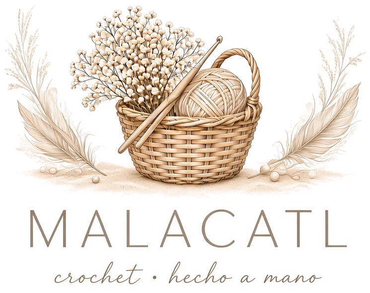
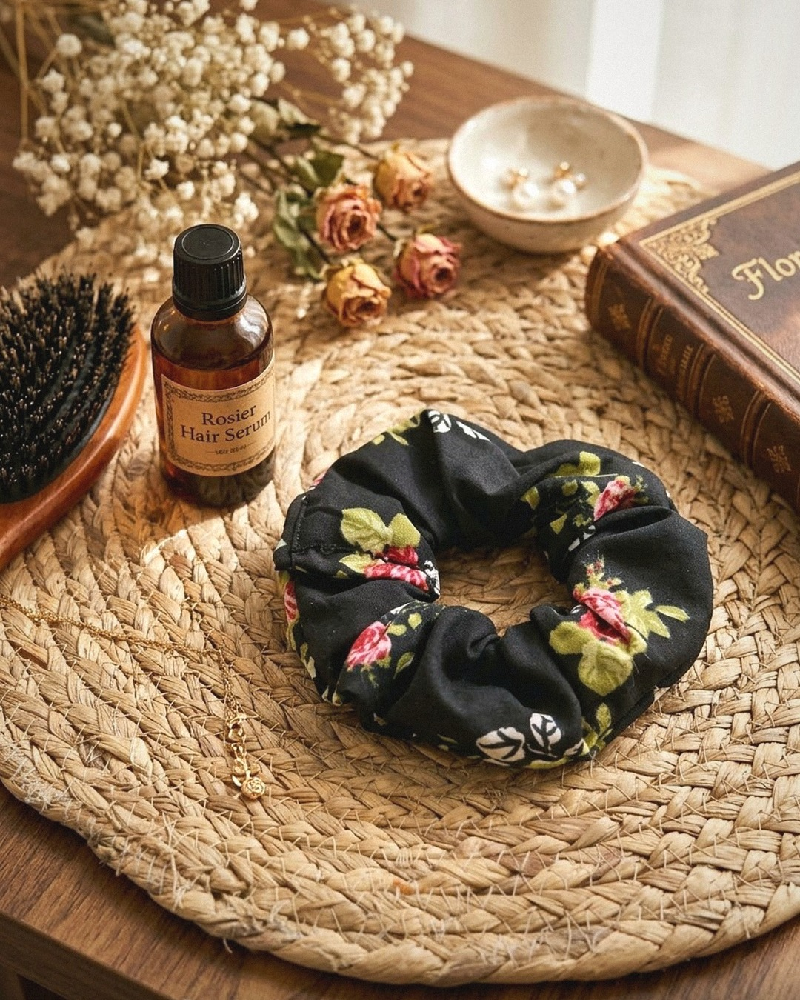

Scrunchie floral azul
$25 pesos

Crochet · hecho a mano
Ciudad Juárez, Chihuahua
Ver catálogoTejer llegó a mi vida en un momento en que más lo necesitaba. Después de atravesar mucho dolor, encontré en las manualidades una manera de sanar: cada vuelta de hilo, cada punto, fue calmando mi corazón y curando mi alma poco a poco.
Malacatl nace de ese proceso. Cada scrunchie, amigurumi o accesorio que hago lleva un pedacito de esa paz que el tejido me regaló.
Mi deseo es que estas pequeñas piezas no solo te ayuden a verte bonita, sino que también te regalen un poco de felicidad, y que, así como a mí me ayudaron, puedan acompañarte en tu propio camino de sanación.
Hecho a mano, con amor, desde Ciudad Juárez.
$25 pesos

$25 pesos
¿Te enamoraste de alguna pieza o quieres un diseño personalizado? Contáctame.